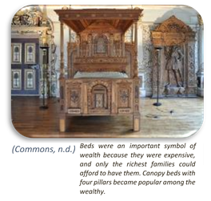
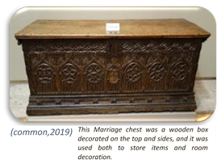
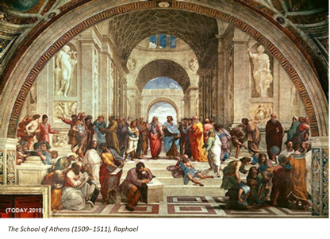
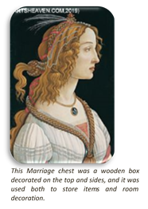
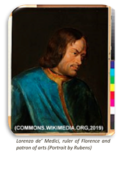

GENERAL DESCRIPTION AND TIMEFRAME
The Renaissance was a cultural movement that profoundly affected European intellectual life in the early modern period. Beginning in Italy and spreading to the rest of Europe by the 16th century, its influence was felt in literature, philosophy, art, music, politics, science, religion, and other aspects of intellectual inquiry. Renaissance scholars employed the humanist method in study, and searched for realism and human emotion in art. (Study.com, 2019)
The Renaissance is a period in European history, covering the span between the 14th and 17th centuries and marking the transition from the Middle Ages to modernity. The traditional view focuses more on the early modern aspects of the Renaissance and argues that it was a break from the past, but many historians today focus more on its medieval aspects and argue that it was an extension of the Middle Ages.
The word "Renaissance" means "rebirth". Coming out of the Dark. The Middle Ages began with the fall of the Roman Empire. The Renaissance began in Florence, Italy.
The intellectual basis of the Renaissance was its version of humanism, derived from the concept of Roman Humanities and the rediscovery of classical Greek philosophy, such as that of Protagoras, who said that "Man is the measure of all things." This new thinking became manifest in art, architecture, politics, science and literature. Early examples were the development of perspective in oil painting and the recycled knowledge of how to make concrete. Although the invention of metal movable type sped the dissemination of ideas from the later 15th century, the changes of the Renaissance were not uniformly experienced across Europe: the very first traces appear in Italy as early as the late 13th century, in particular with the writings of Dante and the paintings of Giotto.
As a cultural movement, the Renaissance encompassed innovative flowering of Latin and vernacular literatures, beginning with the 14th-century resurgence of learning based on classical sources, which contemporaries credited to Petrarch; the development of linear perspective and other techniques of rendering a more natural reality in painting; and gradual but widespread educational reform. In politics, the Renaissance contributed to the development of the customs and conventions of diplomacy, and in science to an increased reliance on observation and inductive reasoning. (Study.com, 2019)
MAIN FEATURES AND CHARACTERISTICS
Art is the most splendid achievement of Renaissance. Main issues include:
- Perspective
- Realism
- Classical references
- National literature
- Often secular subjects
During the Renaissance, money and art went hand in hand. Artists depended entirely on patrons while the patrons needed money to foster artistic talent. Wealth was brought to Italy in the 14th, 15th, and 16th centuries by expanding trade into Asia and Europe. Silver mining in Tyrol increased the flow of money. Luxuries from the Eastern world, brought home during the Crusades, increased the prosperity of Genoa and Venice.
In all, the Renaissance could be viewed as an attempt by intellectuals to study and improve the secular and worldly, both through the revival of ideas from antiquity, and through novel approaches to thought.
Renaissance art marks a cultural rebirth at the close of the Middle Ages and rise of the Modern world. One of the distinguishing features of Renaissance art was its development of highly realistic linear perspective. Giotto di Bondone (1267–1337) is credited with first treating a painting as a window into space, but it was not until the demonstrations of architect Filippo Brunelleschi (1377–1446) and the subsequent writings of Leon Battista Alberti (1404–1472) that perspective was formalized as an artistic technique.
During the Renaissance, architects aimed to use columns, pilasters, and entablatures as an integrated system. The Roman orders types of columns are used: Tuscan, Doric, Ionic, Corinthian and Composite. These can either be structural, supporting an arcade or architrave, or purely decorative, set against a wall in the form of pilasters. One of the first buildings to use pilasters as an integrated system was in the Old Sacristy (1421–1440) by Brunelleschi. Arches, semi-circular or (in the Mannerist style) segmental, are often used in arcades, supported on piers or columns with capitals. There may be a section of entablature between the capital and the springing of the arch. Alberti was one of the first to use the arch on a monumental. Renaissance vaults do not have ribs; they are semi-circular or segmental and on a square plan, unlike the Gothic vault, which is frequently rectangular.
Renaissance artists were not pagans, although they admired antiquity and kept some ideas and symbols of the medieval past. Nicola Pisano (c. 1220–c. 1278) imitated classical forms by portraying scenes from the Bible. His Annunciation, from the Baptistry at Pisa, demonstrates that classical models influenced Italian art before the Renaissance took root as a literary movement. (Study.com, 2019)
ARCHITECTURE
Renaissance façades are symmetrical around their vertical axis. For instance, church façades of this period are generally surmounted by a pediment and organized by a system of pilasters, arches, and entablatures. The columns and windows show a progression towards the center. One of the first true Renaissance façades was the Cathedral of Pienza (1459–62), which has been attributed to the Florentine architect Bernardo Gambarelli (known as Rossellino).
Renaissance architects also incorporated columns and pilasters, using the Roman orders of columns (Tuscan, Doric, Ionic, Corinthian, and Composite) as models. The orders can either be structural, supporting an arcade or architrave, or purely decorative, set against a wall in the form of pilasters. During the Renaissance, architects aimed to use columns, pilasters, and entablatures as an integrated system. One of the first buildings to use pilasters as an integrated system was the Old Sacristy (1421–1440) by Brunelleschi.
The dome is used frequently in this period, both as a very large structural feature that is visible from the exterior, and also as a means of roofing smaller spaces where they are only visible internally. Domes were used in important structures such as the Pantheon during antiquity, but had been used only rarely in the Middle Ages. After the success of the dome in Brunelleschi’s design for the Florence Cathedral and its use in Bramante’s plan for St. Peter’s Basilica in Rome, the dome became an indispensable element in Renaissance church architecture and carried over to the Baroque.
Windows may be paired and set within a semicircular arch and may have square lintels and triangular or segmental pediments, which are often used alternately. Emblematic in this respect is the Palazzo Farnese in Rome, begun in 1517. In the Mannerist period, the “Palladian” arch was employed, using a motif of a high semicircular topped opening flanked with two lower square-topped openings. Windows were used to bring light into the building and in domestic architecture, to show the view. Stained glass, although sometimes present, was not a prevalent feature in Renaissance windows.
Finally, external Renaissance walls were generally of highly finished ashlar masonry, laid in straight courses. The corners of buildings were often emphasized by rusticated quoins. Basements and ground floors were sometimes rusticated, as modeled on the Palazzo Medici Riccardi (1444–1460) in Florence. Internal walls were smoothly plastered and surfaced with white chalk paint. For more formal spaces, internal surfaces were typically decorated with frescoes.
INTERIORS AND FURNITURE
Renaissance furniture had a strong architectural sense. It had a restrained character and was seen as a symbol of social status. The ornaments were mostly carved and incorporated architectural elements, like columns and cornices. Cupids, strapwork, foliage, and arabesques were other motifs for decoration.
As it happened in other arts of the time, Renaissance furniture was influenced by the Classical World. The pieces had a strong architectural sense and were conceived to be a subordinated part of the architectonic design.
Furniture was also seen as a symbol of social status. Items like beds were an important symbol of wealth because they were expensive, and only the richest families could afford to have them. Canopy beds with four pillars became popular among the wealthy. On the other hand, many people still slept on mattresses stuffed with straw or even directly on a bed of straw. Something similar happened with chairs. While the wealthy families had large, comfortable and elaborate chairs, the lower classes had simpler chairs. The scissor, or x-shaped chair, was a common item.
The marriage chest, or cassoni, was a characteristic type of furniture during the Renaissance. This chest was a wooden box decorated on the top and sides, and it was used both to store items and room decoration. All social classes tried to have at least one. However, the level of detail and ornamentation varied among social classes, and only the wealthiest could afford the most elaborate pieces.
PRINCIPAL DESIGNERS
| Name | Year |
|---|---|
| Donato Bramante | 1444-1514 |
| Michelangelo | 1475-1564 |
| Leon Battista Alberti | 1404-1472 |
| Filippo Brunelleschi | 1377-1446 |
| Leonardo da Vinci | 1452-1519 |
| Giacomo Barozzi da Vignola | 1507-1573 |